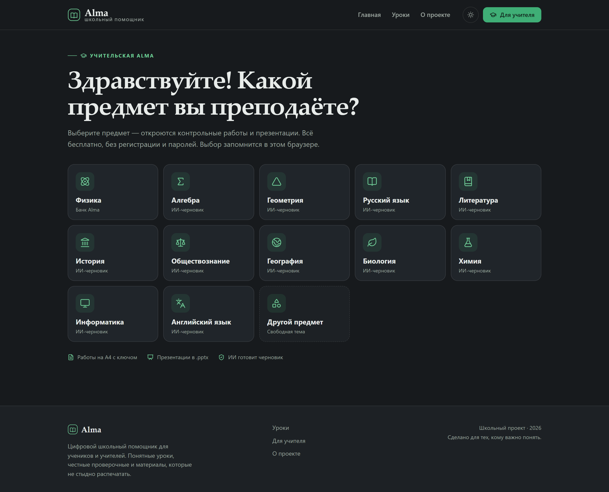
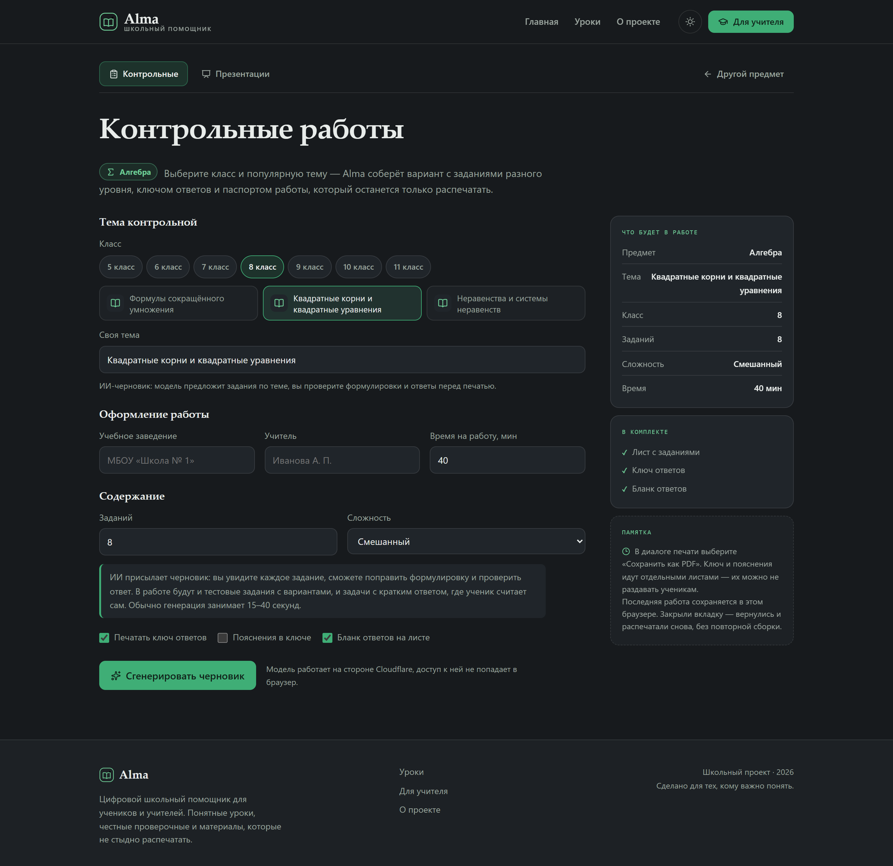
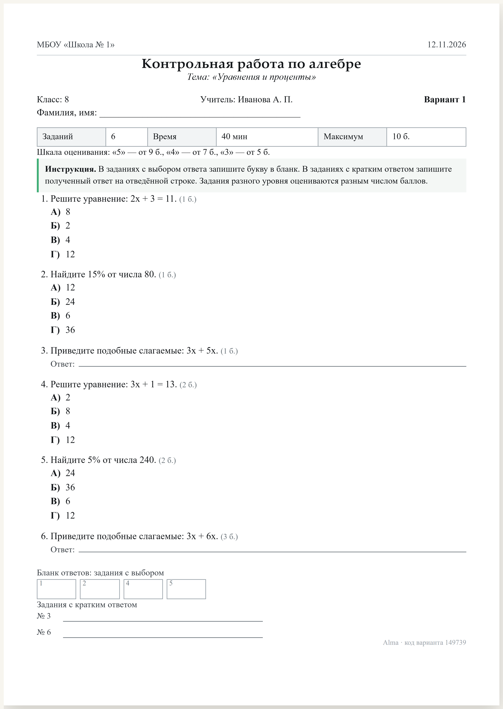
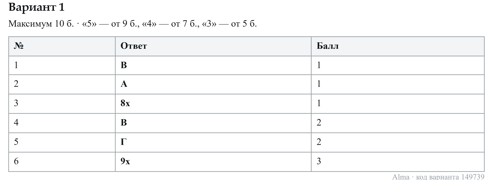
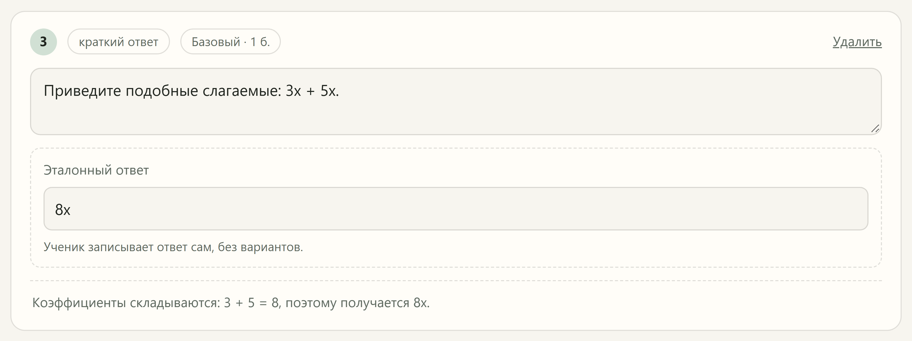
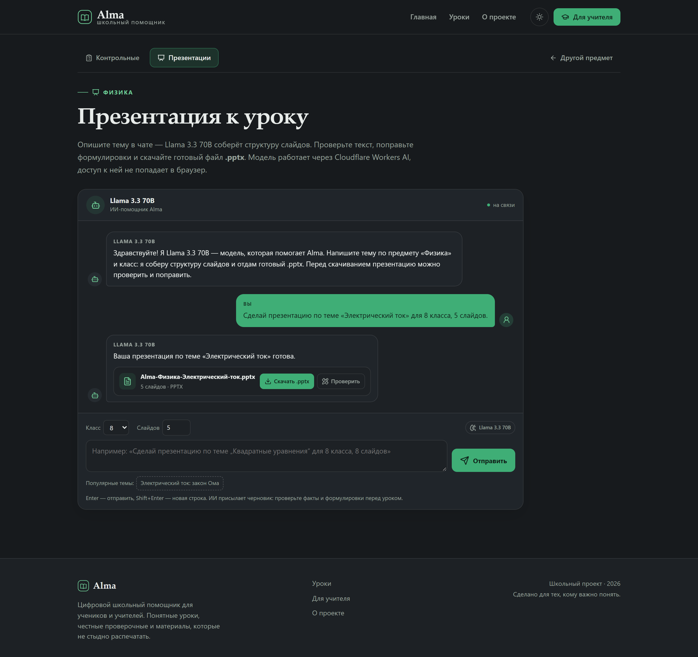
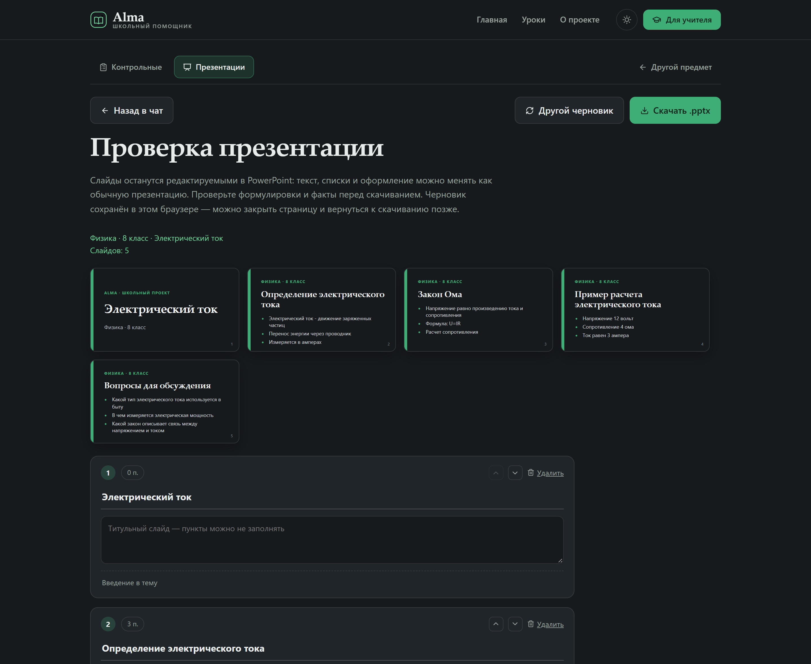

Ниже разобрано, как устроена учительская часть Alma: вход с выбором
предмета, контрольные работы и презентации. Показан путь от темы до
готового листа A4 с ключом или файла .pptx. Для каждого
шага указан файл, функция и небольшой фрагмент кода. В конце приведены
экраны, которые видит учитель.
В проекте два независимых пути получения заданий. Первый — банк Alma: задания и ответы считаются прямо в браузере, без интернета. Второй — ИИ: модель присылает черновик, который учитель проверяет перед печатью. Дальше оба пути сходятся в одном и том же печатном листе.
Сайт состоит из трёх слоёв, и у каждого своя задача.
| Слой | Где работает | За что отвечает |
|---|---|---|
| Интерфейс | Браузер учителя | Форма, проверка черновика, печатный лист, сохранение работы в браузере |
| Сайт | GitHub Pages | Отдаёт готовые HTML, CSS и JavaScript. Никакой базы данных и аккаунтов |
| ИИ-посредник | Cloudflare Pages Functions | Принимает запрос, добавляет методический промпт, обращается к модели и проверяет формат ответа |
Ключевое разделение: браузер никогда не обращается к модели напрямую.
Он отправляет обычный POST-запрос на адрес
https://alma-ai-73x.pages.dev/api/generate. Адрес задаётся
переменной VITE_AI_ENDPOINT при сборке. Учётные данные
модели, если они есть, остаются на стороне Cloudflare.
Основные файлы учительской части:
| Файл | Что делает |
|---|---|
src/pages/TeacherHomePage.jsx |
Вход в учительскую: приветствие и выбор предмета |
src/pages/TeacherSubjectPage.jsx |
Меню выбранного предмета: контрольные и презентации |
src/pages/TeacherPage.jsx |
Экран контрольных: форма, переключение банка и ИИ, запуск сборки, печать |
src/teacher/curriculum.js |
Популярные темы по предметам и классам |
src/teacher/profile.js |
Предмет, классы по предметам и данные для шапки работы в браузере |
src/teacher/buildTest.js |
Сборка варианта из банка: уровни, квоты, выбор заданий, шкала оценок |
src/teacher/rng.js |
Детерминированный генератор случайных чисел |
src/teacher/topics/ |
Генераторы заданий по темам: движение, плотность, Ньютон, давление, работа, электричество, относительность |
src/teacher/topics/helpers.js |
Правдоподобные неверные варианты ответа |
src/teacher/ai.js |
Запрос к ИИ, повтор при сетевой ошибке, проверка ответа на клиенте |
src/pages/PresentationPage.jsx |
Чат с ИИ: разбор запроса, генерация и сохранение черновика |
src/teacher/PresentationReview.jsx |
Проверка и правка слайдов перед скачиванием |
src/teacher/DraftReview.jsx |
Экран проверки черновика: правка текста, выбор верного ответа, удаление заданий |
src/teacher/TestSheet.jsx |
Печатный лист, бланк ответов и ключ |
src/teacher/presentation.js |
Сборка редактируемого файла .pptx |
src/lib/lastWork.js |
Сохранение последней работы и черновика в браузере |
cloudflare/worker.js |
Серверный посредник: промпт, обращение к модели, разбор и проверка JSON |
Вход в учительскую начинается не с формы, а с вопроса «Какой предмет
вы преподаёте?». Экран выбора собран в
src/pages/TeacherHomePage.jsx, маршрут — #/teacher.
Рядом с каждым предметом стоит иконка Lucide, а выбранный предмет
запоминается в браузере и открывает меню из двух инструментов:
контрольных работ и презентаций.

После выбора предмета открывается меню
#/teacher/:subjectId. Контрольные живут по адресу
#/teacher/:subjectId/tests, презентации —
#/teacher/:subjectId/presentation. Старый адрес
#/teacher/presentation перенаправляет на физику, чтобы
прежние ссылки не ломались.
Форма контрольной собирает всё, что попадёт на лист: учебное заведение,
фамилию учителя, класс, время работы, тему, число заданий и сложность.
Значения хранятся в состоянии React, а при каждом изменении сохраняются
в localStorage. Поэтому после закрытия вкладки форма
открывается с теми же данными.

Класс задаётся кнопками-чипами, а темы подбираются из каталога
src/teacher/curriculum.js под выбранный предмет и класс.
Поэтому у физики в 7 классе видны механика и плотность, в 8-м — закон
Ома, а в 9–11-м — законы Ньютона и теория относительности. Для
«Другого предмета» каталога нет: учитель вводит тему текстом.
Выбор предмета определяет источник заданий. У физики в
src/teacher/subjects.js стоит source: 'bank',
у алгебры, русского языка и остальных предметов — source: 'ai'.
От этого зависит, какая кнопка показывается: «Собрать работу» или
«Сгенерировать черновик».
Обе кнопки вызывают свои функции в TeacherPage.jsx:
runBank() и runAI(). Первая работает полностью
на устройстве. Вторая только отправляет параметры на сервер и получает
черновик. Печать в обоих случаях идёт через один и тот же компонент
TestSheet.
Если бы Alma использовала обычный Math.random(), один и тот
же вариант нельзя было бы повторить. Поэтому в
src/teacher/rng.js лежит детерминированный генератор
mulberry32. Ему дают число — seed, — и он выдаёт одну и ту же
последовательность чисел при каждом запуске.
export function makeRng(seed) {
let state = (seed >>> 0) || 1
function next() {
state = (state + 0x6d2b79f5) >>> 0
let t = state
t = Math.imul(t ^ (t >>> 15), t | 1)
t ^= t + Math.imul(t ^ (t >>> 7), t | 61)
return ((t ^ (t >>> 14)) >>> 0) / 4294967296
}
function int(min, max) {
return min + Math.floor(next() * (max - min + 1))
}
function shuffle(list) {
const result = [...list]
for (let i = result.length - 1; i > 0; i -= 1) {
const j = int(0, i)
const temp = result[i]
result[i] = result[j]
result[j] = temp
}
return result
}
return { next, int, pick, shuffle }
}
next() возвращает дробное число от 0 до 1. int()
превращает его в целое в заданном диапазоне. shuffle()
перемешивает список алгоритмом Фишера — Йетса: проходит с конца и меняет
текущий элемент со случайным из начала. Так каждый элемент может попасть
на любое место, и смещение не возникает.
Seed выбирается в buildTest(): случайное число от 100000 до
999999. Оно печатается внизу листа как «код варианта». Второй вариант
получает seed base + 7919, поэтому набор заданий отличается,
но остаётся воспроизводимым.
export function buildTest({ topicId, count = 10, difficultyId = 'mixed', variantCount = 1, seedBase }) {
const topic = getTopicById(topicId)
const base = (seedBase ?? Math.floor(Math.random() * 900000) + 100000) >>> 0
const variants = Array.from({ length: variantCount }, (_, index) =>
buildVariant(topic, {
count,
difficultyId,
seed: (base + index * 7919) >>> 0,
}),
)
return { topic, seedBase: base, variants }
}Что это даёт на практике. Учитель может закрыть вкладку, вернуться и распечатать ту же работу: код варианта и настройки сохранены. Если нужно проверить, что у соседей по парте разные задания, достаточно сравнить коды вариантов внизу листов.
У задания три возможных уровня: базовый — 1 балл, повышенный — 2 балла, высокий — 3 балла. Сложность работы задаёт доли уровней:
| Сложность | Базовые | Повышенные | Высокие |
|---|---|---|---|
| Базовый | 100% | 0% | 0% |
| Смешанный | 50% | 35% | 15% |
| Повышенный | 20% | 45% | 35% |
Просто умножить долю на количество нельзя: получатся дробные числа, а
после округления сумма может не совпасть с нужным количеством. Поэтому
в quotaFor() используется метод наибольших остатков.
Сначала берутся целые части, потом оставшиеся задания раздаются по
одному тем уровням, у кого дробная часть больше.
function quotaFor(count, mix) {
const rows = Object.entries(mix).map(([level, share]) => ({
level,
whole: Math.floor(share * count),
remainder: share * count - Math.floor(share * count),
}))
let left = count - rows.reduce((sum, row) => sum + row.whole, 0)
const byRemainder = [...rows].sort((a, b) => b.remainder - a.remainder)
let index = 0
while (left > 0) {
byRemainder[index % byRemainder.length].whole += 1
index += 1
left -= 1
}
return Object.fromEntries(rows.map((row) => [row.level, row.whole]))
}Пример для шести заданий смешанной сложности: 50% даёт 3,0; 35% даёт 2,1; 15% даёт 0,9. Целые части — 3 + 2 + 0 = 5. Одно задание остаётся, и его получает уровень с наибольшим остатком — высокий. Итог: 3 базовых, 2 повышенных, 1 высокое. Именно такой набор виден на скриншоте листа ниже: баллы идут 1, 1, 1, 2, 2, 3.
Для десяти заданий смешанной сложности получается 5 базовых, 4 повышенных
и 1 высокое. Сумма всегда ровно count, даже если доли
не делятся нацело.
Для каждого уровня берётся свой список генераторов. Он перемешивается,
после чего программа идёт по нему по кругу. Кандидат принимается, только
если у него ровно три неверных варианта и такого текста ещё не было.
Тексты складываются в Set used — это и есть
защита от повторов.
const used = new Set()
const items = []
LEVEL_ORDER.forEach((level) => {
const need = quota[level] || 0
if (need === 0) return
let pool = topic.generators.filter((generator) => generator.level === level)
if (pool.length === 0) pool = topic.generators
let order = rng.shuffle(pool)
let cursor = 0
for (let i = 0; i < need; i += 1) {
let draft = null
for (let attempt = 0; attempt < 40; attempt += 1) {
if (cursor >= order.length) {
cursor = 0
order = rng.shuffle(pool)
}
const generator = order[cursor]
cursor += 1
const candidate = generator.build(rng)
if (candidate && candidate.distractors.length === 3 && !used.has(candidate.text)) {
draft = candidate
break
}
}
if (!draft) return
used.add(draft.text)
const options = rng.shuffle([draft.correct, ...draft.distractors])
items.push({
level,
points: LEVELS[level].points,
text: draft.text,
options,
correctIndex: options.indexOf(draft.correct),
explanation: draft.explanation,
})
}
})Если после всех уровней заданий всё равно меньше нужного — например, учитель попросил двадцать задач по узкой теме, — включается запасной добор из всех генераторов. На него отведено не больше 500 попыток, чтобы программа не зависла. В конце список сортируется по уровню: базовые, повышенные, высокие.
Счётчики 40 и 500 — это не ограничение работы, а страховка. Если генератор не может выдать корректную задачу, цикл всё равно завершится, и Alma покажет то, что успела собрать.
В src/teacher/topics/helpers.js есть две функции:
numericAnswer() для вычислительных задач и
choiceAnswer() для качественных вопросов. Первая считает
правильный ответ формулой, а неверные берёт из типичных ошибок.
export function numericAnswer(value, unit, extraValues = []) {
const suffix = unit ? ` ${unit}` : ''
const correct = `${formatNumber(value)}${suffix}`
const seen = new Set([formatNumber(value)])
const distractors = []
function tryAdd(raw) {
if (distractors.length >= 3) return
if (!Number.isFinite(raw) || raw <= 0) return
const text = formatNumber(raw)
if (seen.has(text)) return
seen.add(text)
distractors.push(`${text}${suffix}`)
}
const candidates = [...extraValues, value * 2, value / 2, value * 3, value / 4]
candidates.forEach(tryAdd)
return { correct, distractors }
}Кандидаты в неверные ответы идут в таком порядке: сначала особые значения, переданные конкретной задачей, потом удвоенный ответ, половинный, утроенный и четверть. Ответ должен быть положительным и не совпадать с правильным. Если кандидат не подходит, берётся следующий.
Пример из темы «Электричество». В
src/teacher/topics/ohm.js генератор выбирает напряжение
12 В и сопротивление 3 Ом. Сила тока считается как 12 : 3 = 4 А.
numericAnswer(4, 'А') даёт правильный ответ «4 А» и
неверные «8 А», «2 А», «12 А». Это не случайные числа, а результаты
типичных ошибок: забыл разделить, разделил не так, перепутал формулу.
Числа печатаются по-русски: formatNumber() ставит запятую
вместо точки и неразрывный пробел между тысячами. Поэтому в вариантах
ответа появляется «12,5», а не «12.5».
Задания разного уровня весят по-разному, поэтому оценка считается от
суммы баллов, а не от числа заданий. В gradeScale() три
порога: 85% максимума — «5», 70% — «4», 50% — «3». Ниже 50% — «2».
export function gradeScale(totalPoints) {
return {
five: Math.ceil(totalPoints * 0.85),
four: Math.ceil(totalPoints * 0.7),
three: Math.ceil(totalPoints * 0.5),
}
}
Math.ceil() округляет вверх, чтобы порог был целым и не
занижал оценку. Например, при максимуме 10 баллов получается 9, 7 и 5 —
это видно на листе и в ключе. При максимуме 17 баллов пороги будут 15,
12 и 9.
Печатная часть собрана в src/teacher/TestSheet.jsx. Компонент
TestSheet рисует один вариант, AnswerKey —
ключ. Лист имеет ширину 210 мм и минимальную высоту 297 мм, то есть
ровно A4. На экране он выглядит как бумага с тенью, а при печати тень
убирается и каждый лист начинается с новой страницы.

Внутри листа есть паспорт работы: число заданий, время, максимум баллов и шкала. Дальше идёт инструкция, которая меняется в зависимости от состава варианта. Если в работе только задания с выбором, ученик пишет букву в бланк. Если есть задания с кратким ответом, появляется строка «Ответ:» и отдельный блок бланка.
{isOpenAnswer(item) ? (
<p className="sheet-task-answer">
Ответ: <span className="sheet-open-line" />
</p>
) : (
<ul className="sheet-options">
{item.options.map((option, optionIndex) => (
<li key={optionIndex}>
<span className="sheet-letter">{LETTERS[optionIndex]})</span>
<span>{option}</span>
</li>
))}
</ul>
)}Ключ печатается отдельными листами. Для задания с выбором в колонке «Ответ» стоит буква, для задания с кратким ответом — эталонное значение. Если включён пункт «Пояснения в ключе», рядом появляется колонка с решением. Ключ можно не печатать для учеников: он идёт после листов с заданиями.

Печатью управляет CSS в src/pages/TeacherPage.css. Внутри
@media print задан размер страницы A4 без полей, скрываются
кнопки и подсказки с классом no-print, а у каждого
.sheet появляется break-after: page. Строки
заданий и ключа помечены break-inside: avoid, чтобы вопрос
не разрывался между страницами.
| Шаг | Что происходит | Где код |
|---|---|---|
| 1 | Учитель нажимает «Сгенерировать черновик». Форма проверяет, что тема заполнена | TeacherPage.jsx, checkForm() |
| 2 | Клиент отправляет предмет, класс, тему, число заданий и сложность | src/teacher/ai.js, postToAI() |
| 3 | Cloudflare проверяет origin, размер тела и лимит запросов | cloudflare/worker.js, handleRequest() |
| 4 | Собирается методический промпт с правилами и схемой JSON | buildTestPrompt() |
| 5 | Модель Workers AI возвращает черновик. При битом JSON делается одна повторная попытка | callModel(), decodePayload() |
| 6 | Сервер проверяет каждое задание и отбрасывает некорректные | parseItems() |
| 7 | Клиент ещё раз проверяет формат и показывает предупреждения | normalize() |
| 8 | Учитель проверяет черновик и только потом отправляет его в печать | DraftReview.jsx |
Модель по умолчанию —
@cf/meta/llama-3.3-70b-instruct-fp8-fast. Работает
бесплатный тариф Workers AI. Ключ в браузер не попадает: сайт общается
только с посредником.
Промпт — это не одна фраза «придумай задания». В нём есть роль, схема ответа и тринадцать правил. Четыре главных:
1. В работе нужны задания двух типов: choice — с четырьмя вариантами ответа и open — без вариантов, где ученик сам записывает ответ.
2. Примерно треть заданий должна быть типа open; если заданий пять и больше — не меньше двух.
3. У choice ровно четыре различных варианта и ровно один верный. Неверные варианты — типичные ошибки учеников, а не случайный набор.
4. У open нет полей options и correctIndex. Вместо них есть короткий однозначный answer, который можно проверить по ключу.
Схема ответа выглядит так:
{
"items": [
{
"kind": "choice",
"text": "формулировка задания",
"options": ["вариант 1", "вариант 2", "вариант 3", "вариант 4"],
"correctIndex": 0,
"explanation": "краткое объяснение верного ответа",
"level": "basic",
"check": "ok"
},
{
"kind": "open",
"text": "формулировка задания",
"answer": "краткий ответ",
"explanation": "решение и проверка ответа",
"level": "basic",
"check": "ok"
}
]
}
Отдельное правило требует самопроверки: перед ответом модель обязана
подставить выбранный вариант обратно в условие и пересчитать открытый
ответ. Если проверка не сошлась — задание нужно переделать. Если модель
не уверена в факте или ответ нельзя проверить однозначно, она ставит
"check": "mismatch". Такое задание не отбрасывается
автоматически, но попадает к учителю с пометкой «проверить ответ».
Модель может ошибиться в формате: вернуть три варианта вместо четырёх,
забыть ответ, повторить один и тот же вариант, написать «правильного
ответа нет». Всё это отсекает parseItems(). Сначала
определяется тип задания.
const wantsOpen =
raw.kind === 'open' ||
(raw.kind !== 'choice' && !Array.isArray(raw.options) && Boolean(answer))
if (wantsOpen) {
if (!answer) continue
items.push({ kind: 'open', text, answer, explanation, level, check })
continue
}
const options = Array.isArray(raw.options)
? raw.options.slice(0, 4).map((option) => clean(option, 200)).filter(Boolean)
: []
if (options.length !== 4 || new Set(options).size !== 4) continue
let correct = raw.correctIndex
if (!Number.isInteger(correct) || correct < 0 || correct > 3) continue
Дальше есть ещё две проверки для заданий с выбором. Если в объяснении
прямо написано «не является вариантом» или «правильный ответ не
подходит», задание выбрасывается. Если в объяснении указано
x = 10, а выбран вариант «8», сервер доверяет объяснению,
исправляет индекс и ставит пометку mismatch. Это не
автоматическая оценка: пометка нужна, чтобы учитель обратил внимание.
В конце сервер сортирует задания от простого к сложному и оставляет не больше пятнадцати. Если не осталось ни одного корректного задания, возвращается понятная ошибка, а не пустой список.
В src/teacher/ai.js функция normalize()
повторяет проверку формата, но уже на стороне браузера. Это нужно, чтобы
даже при смене сервера интерфейс не получил задание без ответа или с
пустым текстом. Всё, что не прошло проверку, отбрасывается, а учитель
видит предупреждение: сколько заданий отброшено и сколько требуют
проверки.
Запрос имеет таймаут 75 секунд. Если сеть моргнула — DNS, Wi-Fi, кратковременный сбой прокси, — клиент делает одну быструю повторную попытку. Это спасает урок, но не превращается в бесконечный спиннер: после второй неудачи показывается сообщение с предложением собрать работу из банка.
try {
response = await request()
} catch (error) {
if (error.name === 'AbortError') throw error
// Сетевая ошибка часто оказывается случайной: DNS, Wi-Fi или
// кратковременный сбой прокси. Одна быстрая повторная попытка
// спасает урок, но не превращается в бесконечный спиннер.
response = await request()
}На сервере своя страховка: две попытки разобрать JSON. Если первый ответ модели обрезан или содержит текст вокруг JSON, сервер просит модель повторить и вернуть только корректный объект. Общий бюджет — около минуты, поэтому браузер и сервер не ждут друг друга бесконечно.
Есть и ограничители: тело запроса не больше 20 КБ, не больше 20 запросов
с одного IP в час, разрешённые origin перечислены в
ALLOWED_ORIGINS. Лимит запросов хранится в памяти
конкретного экземпляра Worker, поэтому это защита от случайного
зацикливания, а не полноценная система учёта.
Черновик — это ещё не работа. На экране проверки видно каждое задание, его тип, уровень и баллы. У задания с выбором можно отредактировать формулировку и варианты, отметить верный ответ радиокнопкой или удалить задание целиком. У задания с кратким ответом есть поле «Эталонный ответ» — именно оно попадёт в ключ.

Кнопка «К печати» становится активной только тогда, когда у всех заданий
заполнен текст, а у заданий с выбором — все четыре варианта и выбран
верный. Для открытого задания обязателен непустой эталонный ответ.
После подтверждения черновик превращается в обычный вариант: тот же
TestSheet печатает его так же, как работу из банка.
Черновик сохраняется в браузере. Если закрыть вкладку на середине
проверки, при возврате откроется тот же список заданий с правками.
Это работает через src/lib/lastWork.js.
Презентация использует тот же посредник, но с
kind: "presentation". Промпт требует первый титульный
слайд, содержательные слайды с конкретным материалом, пример с числами
для математики и физики, а последний слайд — итоги или вопросы. Сервер
проверяет, что у слайда есть заголовок, а пункты — непустые строки.
Экран презентаций — чат, собранный в
src/pages/PresentationPage.jsx. Реплика учителя — зелёный
пузырь справа, ответ Llama — пузырь слева. Клиент разбирает свободную
фразу: вытаскивает тему, класс и число слайдов
(parsePrompt()), отправляет запрос и показывает в ответ
фразу «Ваша презентация по теме … готова» вместе с файлом.

.pptx, кнопку скачивания и кнопку проверки.
Перед скачиванием можно открыть проверку слайдов
(src/teacher/PresentationReview.jsx): заголовок, пункты
и заметку можно править, слайды — менять местами и удалять, а пустые
строки отбрасываются. Кнопка «Скачать .pptx» собирает файл только
после проверки, поэтому в нём не остаётся служебного текста модели.

Файл собирается на устройстве учителя в
src/teacher/presentation.js через библиотеку
pptxgenjs. Текст и фигуры остаются редактируемыми в
PowerPoint, Keynote и «Р7-Офис»: это не картинки со слайдами. Библиотека
подгружается динамически, поэтому не утяжеляет обычные страницы сайта.
В Alma нет регистрации, паролей и серверной базы. Всё, что нужно
сохранить, лежит в localStorage — маленьком хранилище
браузера. У каждого набора данных свой ключ.
| Ключ | Что хранит | Файл |
|---|---|---|
alma-progress |
Пройденные уроки ученика | src/lib/progress.js |
alma-last-work |
Последнюю работу, черновик и настройки учителя | src/lib/lastWork.js |
alma-last-presentation |
Последний черновик презентации | src/lib/lastWork.js |
alma-teacher-profile |
Предмет, классы по предметам, школу и фамилию учителя | src/teacher/profile.js |
Последняя работа и последний черновик презентации привязаны к предмету
из адреса. Черновик по физике не появится на странице алгебры:
TeacherPage.jsx и PresentationPage.jsx
сравнивают settings.subjectId с текущим предметом и
игнорируют чужую запись.
Прогресс ученика — это объект, где ключ собран из идентификатора модуля и
урока, а значение равно true:
{
"relativity/classical-crisis": true,
"relativity/reference-frames": true
}
markLessonDone() добавляет такую запись. Итоговая работа
модуля открывается только тогда, когда пройдены все уроки: страница
проверяет длину списка пройденных и сравнивает с общим числом уроков.
Перед сохранением работы lastWork.js проверяет структуру:
у задания с выбором должно быть четыре варианта, целый
correctIndex от 0 до 3, баллы и объяснение; у открытого —
непустой answer. Если запись старая или битая, она не
ломает страницу: недостающие поля берутся из значений по умолчанию, а
невалидная работа просто не загружается.
Ограничение. Данные привязаны к конкретному браузеру и устройству. Если очистить историю браузера или открыть сайт на другом компьютере, прогресс и последняя работа не перенесутся. Это осознанный выбор: он убирает регистрацию, пароли и хранение детских данных на сервере.
Ученик проходит урок, а в конце отвечает на вопросы. Компонент
src/components/Quiz/Quiz.jsx работает так:
alma-progress.Оценка считается по доле правильных ответов, потому что в итоговой работе все вопросы равны:
function gradeFor(ratio) {
if (ratio >= 0.9) return 5
if (ratio >= 0.75) return 4
if (ratio >= 0.6) return 3
return 2
}Это отдельная шкала от учительской. У учителя задания разного уровня и баллы, поэтому там пороги считаются от суммы баллов. У ученика все вопросы итоговой работы одинаковые, поэтому проще считать долю верных ответов: 90%, 75% и 60%.
Для серверной части есть 18 автоматических тестов в
cloudflare/worker.test.mjs. Они проверяют, в частности:
correctIndex к числу;choice и open;
Кроме тестов проходят npm run lint и npm run build.
Вручную проверены сборка работы из банка, генерация черновика, правка
заданий, печать листа и ключа, сохранение после перезагрузки страницы.
Что важно помнить об ограничениях:
| Вопрос | Файл и функция |
|---|---|
| Как выбирается тема и предмет? | src/teacher/subjects.js, src/teacher/topics/index.js |
| Откуда берётся случайность? | src/teacher/rng.js, makeRng() |
| Как считаются квоты сложности? | src/teacher/buildTest.js, quotaFor() |
| Как выбираются задания без повторов? | src/teacher/buildTest.js, buildVariant() |
| Откуда берутся неверные варианты? | src/teacher/topics/helpers.js, numericAnswer() |
| Как считается оценка за работу? | src/teacher/buildTest.js, gradeScale() |
| Как печатается лист и ключ? | src/teacher/TestSheet.jsx, src/pages/TeacherPage.css |
| Как отправляется запрос к ИИ? | src/teacher/ai.js, postToAI() |
| Какой промпт получает модель? | cloudflare/worker.js, buildTestPrompt() |
| Как проверяется ответ модели? | cloudflare/worker.js, parseItems(); src/teacher/ai.js, normalize() |
| Как учитель правит черновик? | src/teacher/DraftReview.jsx |
| Как собирается презентация? | src/teacher/presentation.js, downloadPresentation() |
| Где хранится прогресс и последняя работа? | src/lib/progress.js, src/lib/lastWork.js |
Все фрагменты кода в документе скопированы из проекта. Пути указаны от корня репозитория. Если файл переименуют, изменится и путь, но логика останется той же: форма собирает параметры, банк или ИИ готовит задания, проверка отсеивает некорректное, печать превращает результат в лист A4.